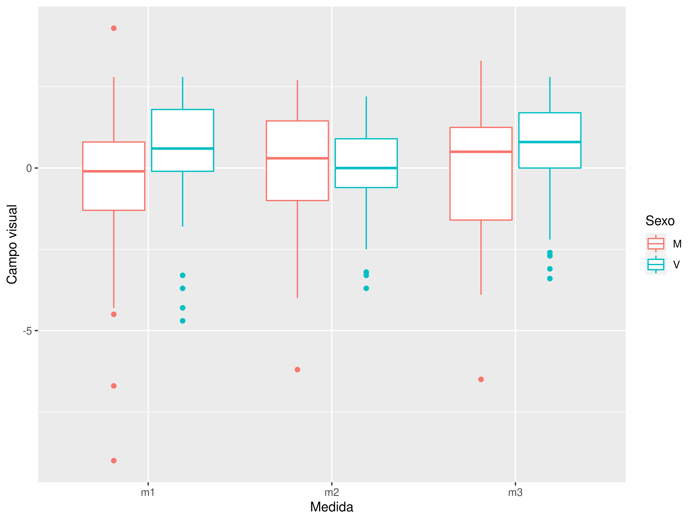

Análisis de concordancia entre las clasificaciones del glaucoma según los anillos retinianos y según el campo visual
2021-11-17
Objetivo
El objetivo de este estudio de los campos visuales es doble. Por un lado estudiar la variabilidad subjetiva en la medición de los campos visuales mediante la repetición de la prueba en los mismos individuos. Por otro lado se pretende comprobar si existe concordancia entre la clasificación de los ojos en los estadíos de glaucoma definidos a partir de los anillos retinianos (ver http://aprendeconalf.es/glaucoma/glaucoma-clusters-izdo.html) y la clasifiación clásica a partir de campo visual.
Análisis de la variabilidad del campo visual
Se ha tomado una muestra de 216 individuos a quienes se les ha medido el campo visual en tres momentos distintos (m1, m2 y m3).
| Medida | Sexo | n | Media | Desv.Est |
|---|---|---|---|---|
| m1 | M | 35 | -0.5257 | 2.643 |
| m1 | V | 37 | 0.4162 | 1.907 |
| m2 | M | 35 | -0.1143 | 2.057 |
| m2 | V | 37 | -0.1243 | 1.497 |
| m3 | M | 35 | -0.3429 | 2.350 |
| m3 | V | 37 | 0.4243 | 1.632 |

Análisis de la varianza de medidas repetidas
No se observan diferecias significativas entre los tres momentos de medición.
Análisis de la variabilidad de la medición del campo visual
Para cada individuo se calcula la desviación típica de las tres medidas. La siguiente tabla contiene los estadísticos de esta nueva variable.
| n | Media | Desv.Est | Error.Est | IC.inf | IC.sup |
|---|---|---|---|---|---|
| 72 | 0.9826 | 0.67 | 0.079 | 0.8251 | 1.14 |
La variabilidad media es que es bastante alta en comparación con la magnitud de los campos visuales.
Variabilidad del campo visual según el sexo
La siguiente tabla refleja la variabilidad del campo visual según el sexo.
| Sexo | n | Media | Desv.Est | Error.Est | IC.inf | IC.sup |
|---|---|---|---|---|---|---|
| M | 35 | 1.009 | 0.6832 | 0.1155 | 0.7739 | 1.243 |
| V | 37 | 0.958 | 0.6658 | 0.1095 | 0.7360 | 1.180 |
No se observa una diferencia significativa entre la variabiidad del campo visual de hombres y mujeres.
Correlación entre la variabilidad del campo visual y la edad
Según el diagrama de dispersión no se aprecia una relación clara entre el campo visual y la edad. El coeficiente de determinación lineal es \(r^2 = 0.0039\) lo que indica que no existe relación lineal entre el campo visual y la edad.
Análisis de la concordancia entre el campo visual y los estadíos de glaucoma
Diagrama de cajas del campo vistual según estadíos de glaucoma
Intervalos de confianza para la media del campo visual según estadíos de glaucoma
| Estadio | n | media | desv.est | error.est | lim.inf.ic | lim.sup.ic |
|---|---|---|---|---|---|---|
| Sano | 500 | -0.2292 | 1.141 | 0.0510 | -0.3295 | -0.1289 |
| I | 51 | -0.4255 | 2.384 | 0.3339 | -1.0961 | 0.2451 |
| II | 78 | -0.7877 | 1.600 | 0.1811 | -1.1484 | -0.4270 |
| III | 56 | -6.5691 | 6.260 | 0.8365 | -8.2454 | -4.8928 |
| IV | 41 | -19.2634 | 7.691 | 1.2011 | -21.6910 | -16.8359 |
 Como se puede apreciar, existe una separación clara entre los intervalos de confianza para la media del campo visual de los estadíos de glaucoma excepto para los estadíos I y II que se solapan.
Como se puede apreciar, existe una separación clara entre los intervalos de confianza para la media del campo visual de los estadíos de glaucoma excepto para los estadíos I y II que se solapan.
Definición de estadíos a partir del campo visual
Definimos a partir del campo visual 4 estadíos al igual que se hizo con los anillos retinianos.
| Estadio.CV | n | media | desv.est | error.est | lim.inf.ic | lim.sup.ic |
|---|---|---|---|---|---|---|
| I | 100 | 0.2279 | 1.230 | 0.1230 | -0.0161 | 0.4719 |
| II | 75 | -3.8841 | 1.595 | 0.1842 | -4.2511 | -3.5172 |
| III | 25 | -12.3892 | 2.847 | 0.5694 | -13.5644 | -11.2140 |
| IV | 26 | -25.4831 | 3.466 | 0.6797 | -26.8829 | -24.0833 |
Análisis de concordancia
Calculamos el coeficiente de concordancia de Kendall para comprobar si los estadíos definidos a partir de los anillos retinianos concuerdan con los definidos a partir del campo visual. No se consideran los ojos sanos ya que la concordancia en este grupo es perfecta.
Kendall's coefficient of concordance Wt
Subjects = 226
Raters = 2
Wt = 0.868
Chisq(225) = 391
p-value = 4.64e-11 Se puede concluir que existe una concordancia fuerte (\(W=0.87\)) y muy significativa (\(p<0.01\)) entre ambos rankings de clasificación del glaucoma.